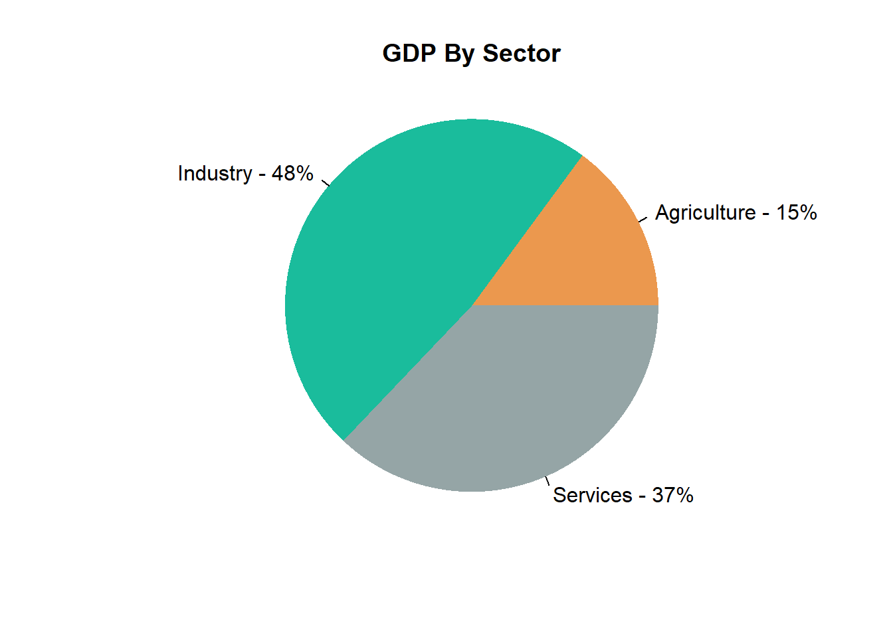
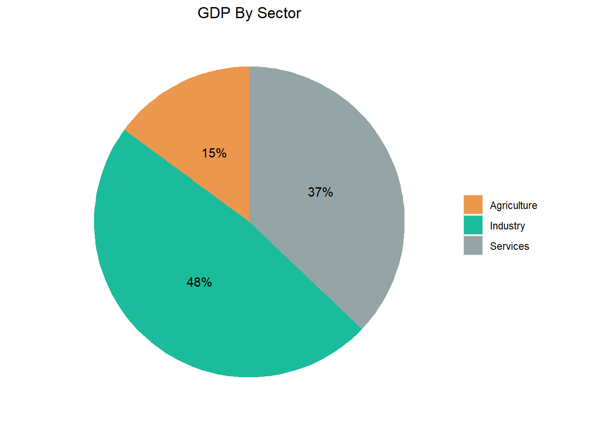

5 Common Graphs (O to Z)
This section covers common graphs and visualization techniques for examining and summarizing your data. Graphs range from O to Z.
Visualization Techniques:
- Pie Charts:
5.1 Pie Chart
An example of a pie chart is shown below:

5.1.1 Overview and Summary
Pie charts are used to display proportions or percentages. Each “slice” of a pie represents a different category and will have an associated percentage.
5.1.2 Common Applications
Pie charts are useful to summarize and compare categories in percentage or relative terms.
5.1.3 Interpretation
Generally, the size of a slice corresponds to the proportion of the category relative to others. While pie charts are useful at a glance, it can be difficult to determine exactly how much larger or smaller one category is.
5.1.4 Doing It In R
In the below, we create pie charts that break down the GDP of Mauritania by sector. Data is pulled on 10/04/2020 from Wikipedia.
5.1.4.1 Pie Chart In Base R
Pie charts in base R can be created with the pie() function. The below is an example with code. To build one, you need a vector of values and a vector of labels. The vector of values do NOT have to be in percent form. They can be the original values - R will automatically scale them within the pie chart.
values = c(14.9, 48.0, 37.1)
sectors = c("Agriculture", "Industry", "Services")
display_color = c("#EB984E", "#1ABC9C", "#95A5A6")
pie(x = values, # vector of data
labels = paste0(sectors, " - ", round(100 * values/sum(values)), "%"), # labels for each slice
col = display_color,
edges = 20000, # smoothness of your circle
radius = 1, # size of pie
border = NA, # adjusts the borders of your pie
main = "GDP By Sector" # title of chart
)5.1.4.2 Pie Chart In ggplot2
Within the package ggplot2, pie charts can be created with the function used to create bar charts geom_bar(). We then convert the bar chart to a pie chart using coord_polar(). The below is an example with code.
library(ggplot2) # import ggplot2
# Create dataframe of data
df = data.frame("Sectors" = c("Agriculture", "Industry", "Services"), # labels for your data
"Values" = c(14.9, 48.0, 37.1)) # values of your data
display_color = c("#EB984E", "#1ABC9C", "#95A5A6") # colors for slices
# Create bar plot
g = ggplot(df, aes(x = "",
y = Values, # values for your slices
fill = Sectors
)
)
g = g + geom_bar( # change the color of the slices
width = 1, # change width of bar
stat = "identity"
)
# CONVERT TO PIE CHART
g = g + coord_polar("y",
start = 0)
g = g + labs(x = NULL, y = NULL, fill = NULL, title = "GDP By Sector")
g = g + theme(axis.line = element_blank(),
axis.text = element_blank(),
axis.ticks = element_blank(),
plot.title = element_text(hjust = 0.5,
color = "#000000"),
panel.background = element_blank()
)
g = g + geom_text(aes(label = scales::percent(values / sum(values))),
position = position_stack(vjust = .5)
)
# Add custom colors
g = g + scale_fill_manual(values = display_color)
g